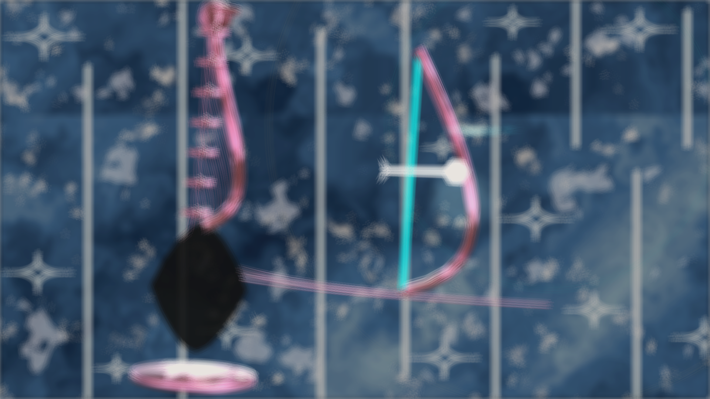
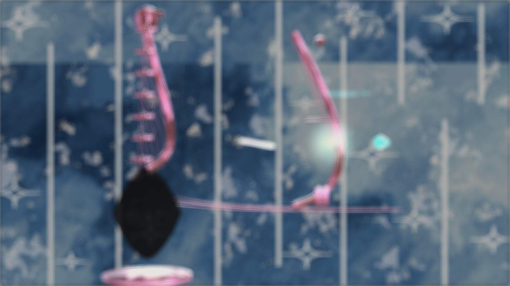
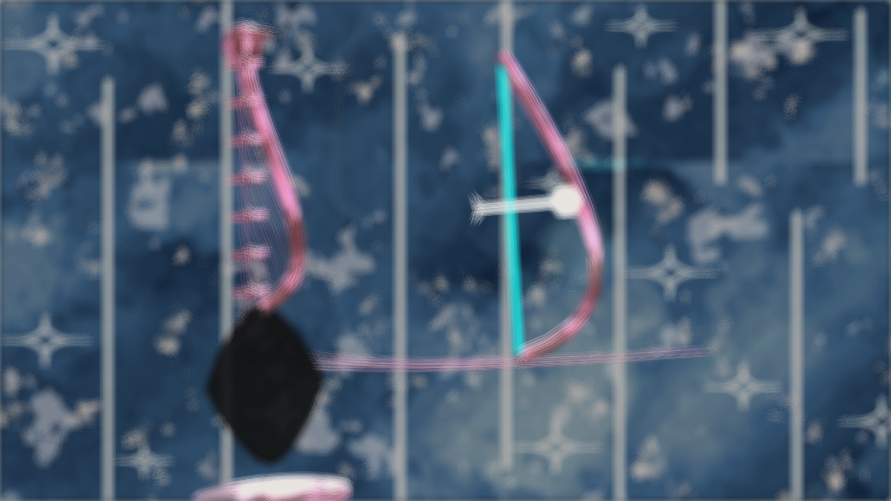
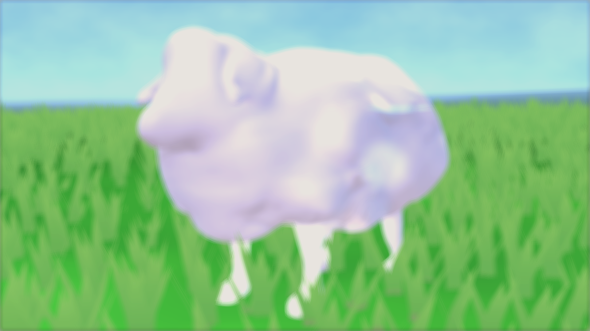
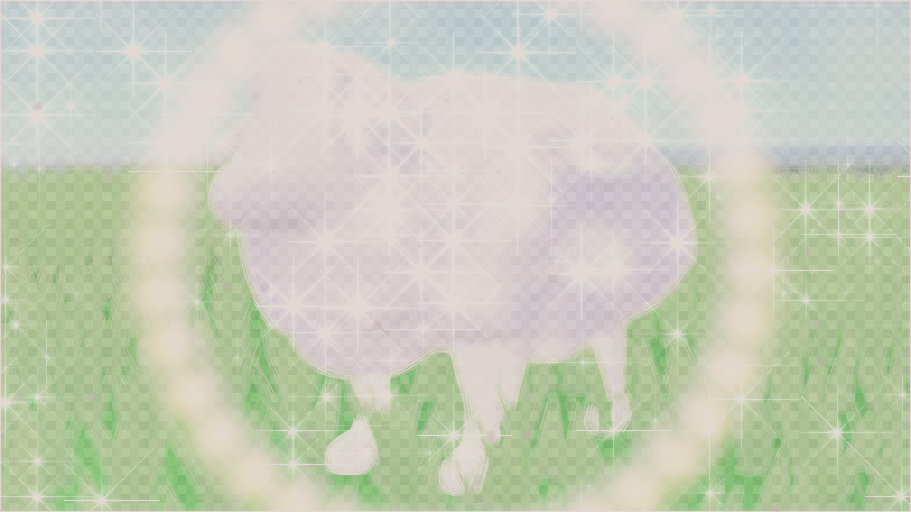
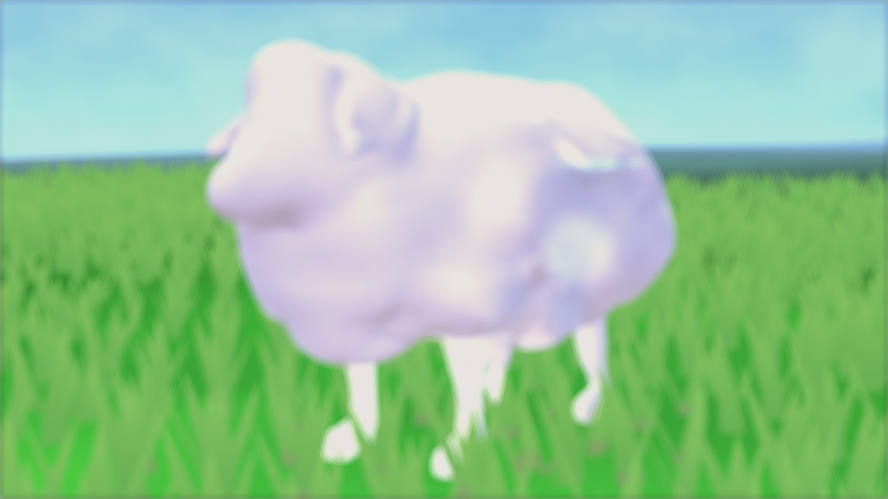
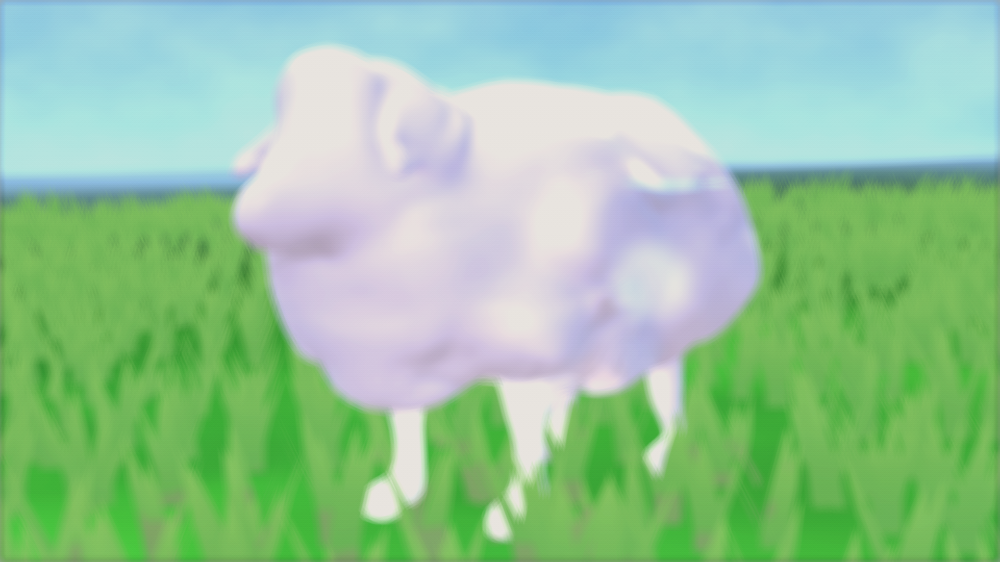
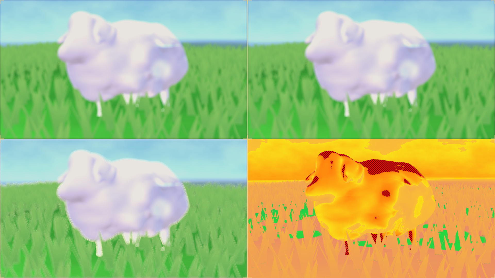

Pass 01Pastoral Dawn
Choral Sheep Sanctuary
Sheep field preset — fleece embroidery and pastoral substrate read as a single dawn light.
Real-time · Unreal Engine + TouchDesigner via Spout
Each plate below is a real-time visual pass for Melodia. Geometry and materials live in Unreal Engine; TouchDesigner drives the look development and receives the frame back over Spout, so these are frames the pipeline actually produced — not offline stills. Every plate passed an 8-gate QA audit for resolution, luminance, variance and checksum at 1920×1080.

Pass 01Choral Sheep Sanctuary
Sheep field preset — fleece embroidery and pastoral substrate read as a single dawn light.

Pass 02Emerald Gesture Bow
Bow-tracked rig — the PBR model and its kinematic stage tuned under stage lighting.

Pass 03Houdini FLIP Fluid
Fluid refraction and caustic dispersion carrying the same frame back out of the sim.

Pass 04Penrose Geometry
Non-periodic Penrose structure with a celestial halation pass layered over the tiling.

Pass 05Couture Bloom
Bloom and cel-diffuse pair running in Nikki mode — the couture response on the Melusina silhouette.

Pass 06Cel Shading → Halftone
Cel shading stage resolved through a pre-dither grade into a printed screentone mask.

Pass 07Dithered Cel
Blue-noise dither standing in for gradient banding, with a crosshatch mask and rim edge light.

Pass 08Multi-Camera Composite
The director's view: four cameras composited in one frame alongside a false-colour scope pass.